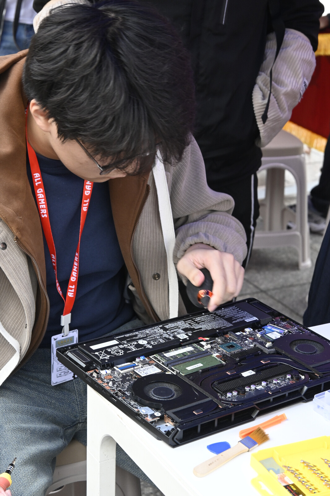
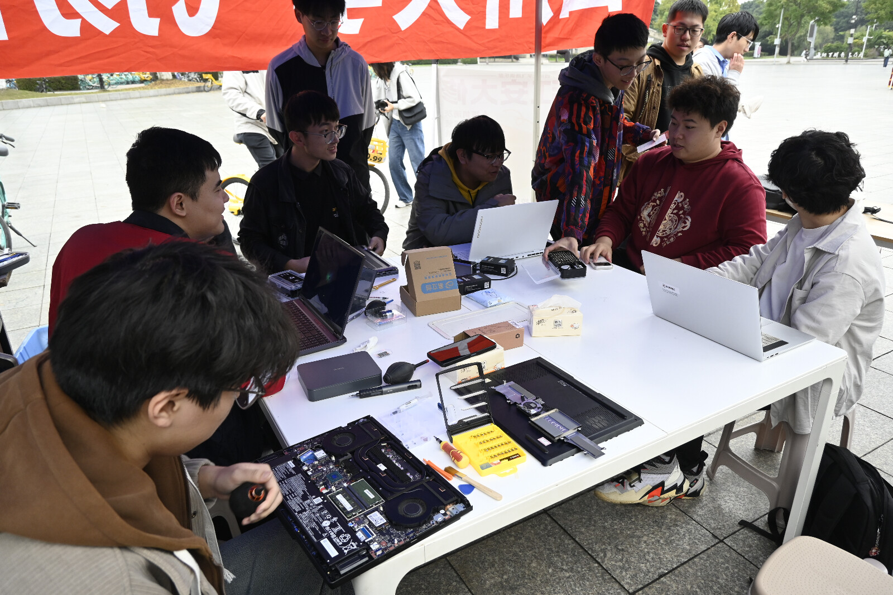
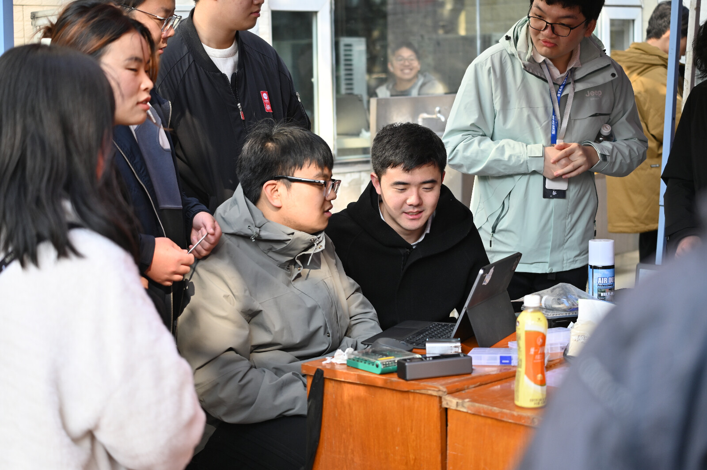

欢迎加入
飞扬俱乐部维修部
"A real carpenter isn't going to use lousy wood for the back of a cabinet, even though nobody's going to see it."
— Steve Jobs
Initialize Breakdown
TITANIUM
24°C
GEFORCE RTX
TG
吴焕基（部长）
24计算机学院，等待代码能力下降10000倍的世界加载ing
计算机学院 2024级
维修部部长
黄珏麟（副部长）
2024级数学学院，没有什么特别爱好，对各类电子产品比较感兴趣，欢迎交流
数学学院 2024级
维修部副部长
廖朗（副部长）
2024级匹兹堡学院，喜欢研究软硬件知识，希望在飞扬能够帮到大家！
匹兹堡学院 2024级
维修部副部长
在维修部能做些什么？
从硬件实操到软件攻坚，做全能型技术极客
硬件清灰/加装配件
系统/软件故障修复
疑难杂症诊断
加入维修部能收获什么？
技术成长+思维提升+社交能力
硬核技术实战
师傅带徒弟传承
逻辑/沟通能力提升
维修部 精彩瞬间
A glimpse into our daily work and team spirit

三校区大型义修
这是部门的招牌活动。每学期在校园广场排开的维修摊位，是飞扬最具排场的时刻，场面既忙碌又专业。

飞扬师傅介绍会
这是一个展现成员的窗口。通过精心准备的文稿和演示，介绍每位师傅擅长的领域——无论是擅长处理复杂的软件冲突，还是精通各类硬件拆解。

内部维修例会
部门内部会定期举行维修例会。大家聚在一起由部长团为新成员介绍讲解电脑知识。